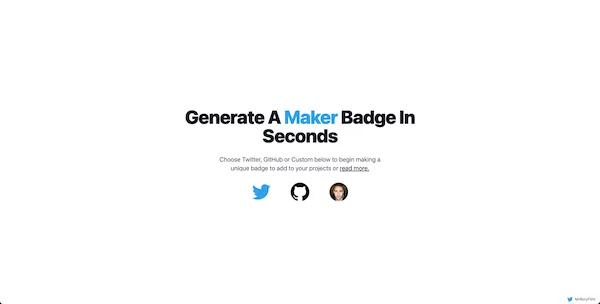

A small app to generate the code to add a ‘Creator” badge to any portfolio project. Built with React and TailwindCSS. Badges can be generated to create a Twitter, GitHub or custom badge.

Inspired by a post Jakob Greenfeld, I decided to add badges to many of my projects. However, some of them made more sense to link to Twitter, others to GitHub and a few directly to this site. Generating the code wasn’t difficult, but it was repetitve. Creator Badge answers the problem by generating the code from any link you supply.
Initially the app will generate either plain HTML or a React component but I hope soon to add the ability to integrate the badges with Vue, Angular, Wordpress and other frameworks.